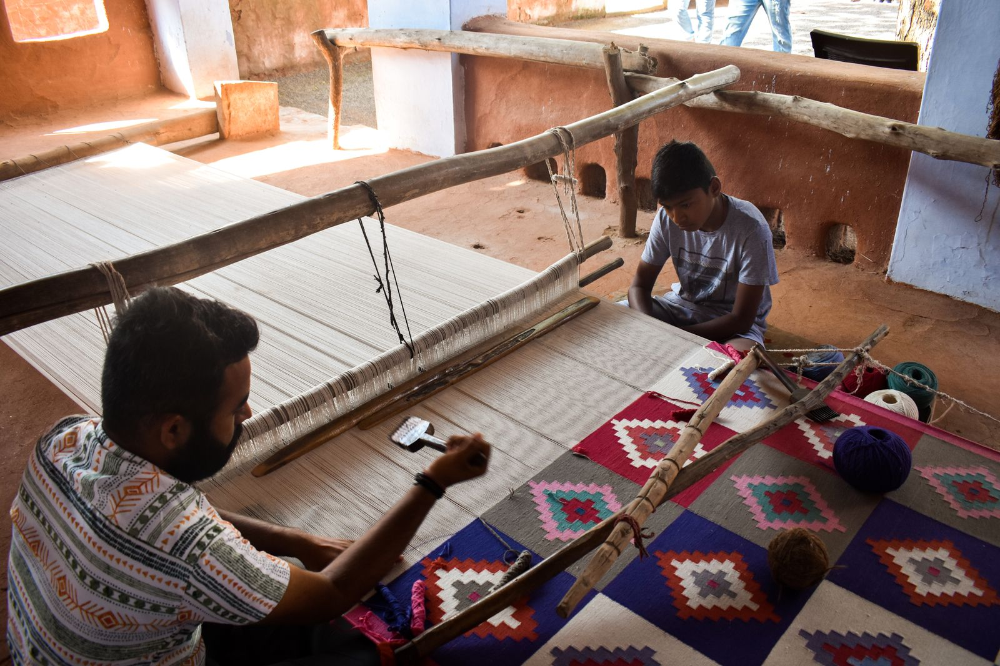

The school group: forty-one students, three groups, nobody lost
Walks 3 + 2 · Thursday 12 February 2026 · 41 students, 3 teachers · 2.0 km per group · school rate ₹400/student
The askA Delhi school's Class 9 history teacher wrote in November: forty-one students, one free morning in Varanasi, and a syllabus chapter on Banarasi silk that she wanted them to stand inside of — the looms first, then the old-city lanes, all before lunch.
What I didMy caps are 8 on the weavers' walk and 10 on the lanes, and a loom room cannot hold forty-one children no matter how politely they queue. So we ran it as a rotation: three groups of thirteen to fourteen, each led by me or one of two fellow licensed guides I work with, staggered twenty minutes apart. Group A started at the looms, Group B in the lanes, Group C at the Pili Kothi silk godowns; we rotated twice and regrouped at the Thatheri Bazaar brass shops, where I told the last story — my grandfather's — to all forty-one at once, in a lane wide enough to hold them.
The outcomeEvery group walked the full 2.0 km of both routes' school variants; the rotation finished at 11:05, five minutes over my promise and inside the school's hard deadline. Headcounts were taken at every regroup — three guides, three lists, zero discrepancies. The school has booked the same morning for February 2027, one class bigger; we will run four groups, and I have already told them the fourth guide's name.
“He refused to take all forty-one at once, which annoyed me in November and is exactly why I'm writing this in February. The children heard the looms. In a group of forty-one they'd have heard each other.”
— The Class 9 history teacher, Delhi school group, Walk 3, February 2026